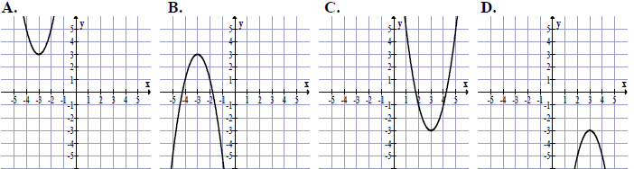
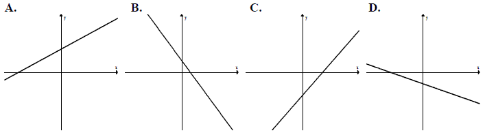

Arkusz maturalny 4
Cena towaru bez podatku VAT jest równa \(60\) zł. Towar ten wraz z podatkiem VAT w
wysokości \(22\%\) kosztuje
A.\( 73{,}20 \) zł
B.\( 49{,}18 \) zł
C.\( 60{,}22 \) zł
D.\( 82 \) zł
A
Iloczyn \(81^2\cdot 9^4\) jest równy
A.\( 3^4 \)
B.\( 3^0 \)
C.\( 3^{16} \)
D.\( 3^{14} \)
C
Różnica \(\log_{3}9-\log_{3}1\) jest równa
A.\( 0 \)
B.\( 1 \)
C.\( 2 \)
D.\( 3 \)
C
Wskaż nierówność, która opisuje przedział zaznaczony na osi liczbowej. 
A.\( |x-1| \lt 3 \)
B.\( |x+1| \lt 3 \)
C.\( |x+1| > 3 \)
D.\( |x-1| > 3 \)
B
Wyrażenie \(x(x−1)(x+1)\) jest równe
A.\( (x-1)^3 \)
B.\( x^3-1 \)
C.\( x^3-x \)
D.\( x^3 \)
C
Kwadrat liczby \(x=2-\sqrt{3}\) jest równy
A.\( 7-4\sqrt{3} \)
B.\( 7+4\sqrt{3} \)
C.\( 1 \)
D.\( 7 \)
A
Zbiorem rozwiązań nierówności \(x(x+5)>0\) jest
A.\( (-\infty, 0)\cup (5, +\infty ) \)
B.\( (-\infty, -5)\cup (0, +\infty ) \)
C.\( (-\infty, -5)\cup (5, +\infty ) \)
D.\( (-5, +\infty ) \)
B
Równanie \(\frac{x^2-4}{(x-4)(x+4)}=0\)
A.nie ma rozwiązań.
B.ma dokładnie jedno rozwiązanie.
C.ma dokładnie dwa rozwiązania.
D.ma dokładnie cztery rozwiązania.
C
Wierzchołek paraboli \(y=x^2+4x−13\) leży na prostej o
równaniu
A.\( x=-2 \)
B.\( x=2 \)
C.\( x=4 \)
D.\( x=-4 \)
A
Wskaż \(m\), dla którego funkcja liniowa \(f(x)=(m−1)x+6\) jest rosnąca
A.\( m=-1 \)
B.\( m=0 \)
C.\( m=1 \)
D.\( m=2 \)
D
Zbiorem wartości funkcji kwadratowej \(f\) jest przedział \((-\infty, 3\rangle\).
Na którym rysunku przedstawiono wykres funkcji \(f\)? 
B
Na którym rysunku przedstawiono wykres funkcji liniowej \(y=ax+b\) takiej, że \(a\gt 0\) i \(b\lt 0\) ? 
C
Do wykresu funkcji \(f(x)=\frac{a}{x}\) dla \(x\ne 0\)
należy punkt \(A=(2, 6)\). Wtedy
A.\( a=2 \)
B.\( a=6 \)
C.\( a=8 \)
D.\( a=12 \)
D
W ciągu arytmetycznym \((a_n)\) mamy: \(a_2=5\) i \(a_4=11\). Oblicz \(a_5\).
A.\( 8 \)
B.\( 14 \)
C.\( 17 \)
D.\( 6 \)
B
W malejącym ciągu geometrycznym \((a_n)\) mamy: \(a_1=-2\) i \(a_3=-4\). Iloraz tego ciągu jest
równy
A.\( -2 \)
B.\( 2 \)
C.\( -\sqrt{2} \)
D.\( \sqrt{2} \)
D
Kąt \(\alpha \) jest ostry i \(\cos \alpha =\frac{3}{4}\). Wtedy \(\sin \alpha \)
jest równy
A.\( \frac{1}{4} \)
B.\( \frac{\sqrt{3}}{4} \)
C.\( \frac{\sqrt{7}}{4} \)
D.\( \frac{7}{16} \)
C
Okrąg opisany na trójkącie równobocznym ma promień \(12\). Wysokość tego trójkąta
jest równa
A.\( 18 \)
B.\( 20 \)
C.\( 22 \)
D.\( 24 \)
A
Przekątna \(AC\) prostokąta \(ABCD\) ma długość \(11\), a bok \(AB\) jest od niej o
\(5\) krótszy. Oblicz długość boku \(AD\).
A.\( \sqrt{157} \)
B.\( \sqrt{85} \)
C.\( 5 \)
D.\( \sqrt{83} \)
B
Punkty \(A, B, C, D, E, F, G, H, I, J\) dzielą okrąg o środku \(S\) na dziesięć
równych łuków. Oblicz miarę kąta wpisanego \(BGE\) zaznaczonego na rysunku. 
A.\( 54^\circ \)
B.\( 72^\circ \)
C.\( 60^\circ \)
D.\( 45^\circ \)
A
Punkty \(A=(−1, 3)\) i \(C=(−5, 5)\) są przeciwległymi wierzchołkami kwadratu
\(ABCD\). Pole tego kwadratu jest równe
A.\( 10 \)
B.\( 25 \)
C.\( 50 \)
D.\( 100 \)
A
Okrąg o równaniu \((x+2)^2+(y-1)^2=13\) ma promień równy
A.\( \sqrt{13} \)
B.\( 13 \)
C.\( 8 \)
D.\( 2\sqrt{2} \)
A
Prosta \(l\) ma równanie \(y=-\frac{1}{4}x+7\). Wskaż
równanie prostej prostopadłej do prostej \(l\).
A.\( y=\frac{1}{4}x+1 \)
B.\( y=-\frac{1}{4}x-7 \)
C.\( y=4x-1 \)
D.\( y=-4x+7 \)
C
Objętość sześcianu jest równa \(27\) cm3. Jaka jest suma długości
wszystkich krawędzi tego sześcianu?
A.\( 18 \) cm
B.\( 36 \) cm
C.\( 24 \) cm
D.\( 12 \) cm
B
Graniastosłup ma \(15\) krawędzi. Ile wierzchołków ma ten graniastosłup?
A.\( 10 \)
B.\( 5 \)
C.\( 15 \)
D.\( 30 \)
A
Ze zbioru liczb \(\{1, 2, 3, 4, 5, 6, 7, 8, 9, 10, 11\}\)
wybieramy losowo jedną liczbę. Niech \(p\) oznacza prawdopodobieństwo wybrania liczby będącej
wielokrotnością liczby \(3\). Wówczas
A.\( p\lt 0{,}3 \)
B.\( p=0{,}3 \)
C.\( p=0{,}4 \)
D.\( p\gt 0{,}4 \)
A
Rozwiąż nierówność \(x^2−14x+24 \gt 0\).
\(x\in (-\infty ;2)\cup (12;+\infty )\)
Rozwiąż równanie \(x^3−3x^2+2x−6=0\).
\(x=3\)
Piąty wyraz ciągu arytmetycznego jest równy \(26\), a suma pięciu początkowych
wyrazów tego ciągu jest równa \(70\). Oblicz pierwszy wyraz tego ciągu.
\(a_1=2\)
Wyznacz równanie okręgu o środku w punkcie \(S=(4, −2)\) i przechodzącego przez
punkt \(O=(0, 0)\).
\((x-4)^2+(y+2)^2=20\)
Wykaż, że trójkąt o wierzchołkach \(A=(3, 8), B=(1, 2), C=(6, 7)\ \) jest
prostokątny.
Wykaż, że jeżeli \(a>0\) i \(b>0\) oraz
\(\sqrt{a^2+b}=\sqrt{a+b^2}\), to \(a=b\) lub \(a+b=1\).
Rzucamy dwukrotnie sześcienną kostką do gry. Oblicz prawdopodobieństwo zdarzenia
polegającego na tym, że suma liczb oczek otrzymanych na obu kostkach jest większa od \(6\) i iloczyn
tych liczb jest nieparzysty.
\(\frac{1}{12}\)
Dany jest graniastosłup prawidłowy trójkątny \(ABCDEF\) o podstawach \(ABC\) i
\(DEF\) i krawędziach bocznych \(AD\), \(BE\) i \(CF\). Oblicz pole trójkąta \(ABF\) wiedząc, że
\(|AB|=10\) i \(|CF|= 11\). Narysuj ten graniastosłup i zaznacz na nim
trójkąt \(ABF\).
\(P=70\)
Kolarz przejechał trasę długości \(60\) km. Gdyby jechał ze średnią prędkością
większą o \(1\) km/h, to przejechałby tę trasę w czasie o \(6\) minut krótszym. Oblicz, z jaką
średnią prędkością jechał ten kolarz.
\(v=24\) km/h